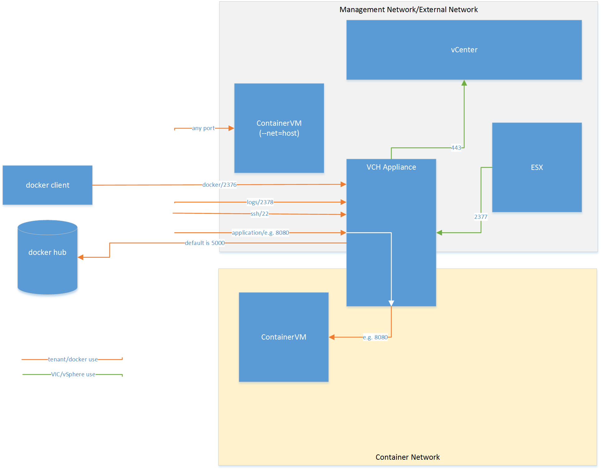

vSphere Integrated Containers Network Overview
vSphere Container Host connects to four network types:
- vSphere Management Network: to communicate with vCenter and ESXi hosts. This network also serves as a tether within the containers to communicate with the vSphere Container Host.
- Docket Management Endpoint Network: to connect to Docker clients and isolate the Docker endpoints from the more public external network.
- External Network: to connect to the internet. Containers can use this external network to publish network services. After defining the external network, you can deploy containers directly on the external interface.
- Container Network: to allow containers to communicate with each other.

The Port Layer
You can configure networks that are tied into the vSphere infrastructure. Pre-configured networks available to a vSphere Container Host are determined by the networks that are part of the provisioning or added when you reconfigure the vSphere Container Host.
The port layer augments vSphere API with low level, platform-specific primitives to allow you to implement a simple container engine:
- Port Layer Execution: Handles container management, such as create, start, and stop.
- Port Layer Interaction: Handles interaction with a running container.
- Port Layer Networking: Handles specific vSphere NSX network mappings into the Docker network namespace as well as mapping existing network entities such as database servers into the Docker container namespace with defined aliases.
- Port Layer Storage: Provides storage manipulation, including container image storage, layering with volume creation and manipulation. imagec, the docker registry client library, uses this component to translate registry images into a layered format that VMDK disk chains can use directly.
Tether Process
The tether process is a minimal agent in the container VM that starts and stops processes and provides monitoring statistics.
Use Cases
These are some use cases of containers using network ports to communicate with each other.
Container with a Published Port
Launch a container and expose a port: run -p
Connect the container with the external mapped port on the external surface of the vSphere Container Host.
$ docker run -p 8080:80 --name test1 my_container my_app
Outcome
You can access Port 80 on test1 from the external network interface on the vSphere Container Host at port 8080.
Simple Bridge Network
Create a new non-default bridge network and set up two containers on the network. Verify that the containers can locate and communicate with each other.
$ docker network create -d bridge my-bridge-network
$ docker network ls
...
NETWORK ID NAME DRIVER
615d565d498c my-bridge-network bridge
...
$ docker run -d --net=my-bridge-network \
--name=server my_server_image server_app
$ docker run -it --name=client --net=my-bridge-network busybox
/ # ping server
PING server (172.18.0.2): 56 data bytes
64 bytes from 172.18.0.2: seq=0 ttl=64 time=0.073 ms
64 bytes from 172.18.0.2: seq=1 ttl=64 time=0.092 ms
64 bytes from 172.18.0.2: seq=2 ttl=64 time=0.088 ms
Outcome
Server and Client can ping each other by name.
Bridged Containers with Exposed Port
Connect two containers on a bridge network and set up one of the containers to publish a port via the vSphere Container Host. Assume server_app binds to port 5000.
$ docker network create -d bridge my-bridge-network
$ docker network ls
...
NETWORK ID NAME DRIVER
615d565d498c my-bridge-network bridge
...
$ docker run -d -p 5000:5000 --net=my-bridge-network \
--name=server my_server_image server_app
$ docker run -it --name=client --net=my-bridge-network busybox
/ # ping -c 3 server
PING server (172.18.0.2): 56 data bytes
64 bytes from 172.18.0.2: seq=0 ttl=64 time=0.073 ms
64 bytes from 172.18.0.2: seq=1 ttl=64 time=0.092 ms
64 bytes from 172.18.0.2: seq=2 ttl=64 time=0.088 ms
/ # telnet server 5000
GET /
Hello world!Connection closed by foreign host
$ telnet vch_external_interface 5000
Trying 192.168.218.137...
Connected to 192.168.218.137.
Escape character is '^]'.
GET /
Hello world!Connection closed by foreign host.
Outcome
Server and Client can ping each other by name. You can connect to the server on port 5000 from the client container and to port 5000 on the vSphere Container Host external interface.
Containers using External Network
Configure two external networks in vSphere:
default-external is 10.2.0.0/16 with gateway 10.2.0.1vic-production is 208.91.3.0/24 with gateway 208.91.3.1
Associate a vSphere Container Host, then set up the vSphere Container Host to the default external network.
Attach the vSphere Container Host to the default-external network at 08.91.3.2.
docker network ls shows:
$ docker network ls
NETWORK ID NAME DRIVER
e2113b821ead none null
37470ed9992f default-external bridge
ea96a6b919de vic-production bridge
b7e91524f3e2 bridge bridge
You have a container providing a web service to expose outside of the vSphere Integrated Containers environment.
Output of docker network inspect default-external:
[
{
"Name": "default-external",
"Id": "37470ed9992f6ab922e155d8e902ca03710574d96ffbfde1b3faf541de2a701f",
"Scope": "external",
"Driver": "bridge",
"IPAM": {
"Driver": "default",
"Options": {},
"Config": [
{
"Subnet": "10.2.0.0/16",
"Gateway": "10.2.0.1"
}
]
},
"Containers": {},
"Options": {}
}
]
Output of docker network inspect vic-production:
[
{
"Name": "vic-production",
"Id": "ea96a6b919de4ca2bd627bfdf0683ca04e5a2c3360968d3c6445cb18fab6d210",
"Scope": "external",
"Driver": "bridge",
"IPAM": {
"Driver": "default",
"Options": {},
"Config": [
{
"Subnet": "208.91.3.0/24",
"Gateway": "208.91.3.1"
}
]
},
"Containers": {},
"Options": {}
}
]
Set up a server on the vic-production network:
$ docker run -d --expose=80 --net=vic-production --name server my_webapp
$ docker inspect --format='{{range .NetworkSettings.Networks}}{{.IPAddress}}{{end}}' server
208.91.3.2
$ telnet 208.91.3.2 80
Trying 208.91.3.2...
Connected to 208.91.3.2.
Escape character is '^]'.
GET /
Hello world!Connection closed by foreign host.
NOTE: You can also use -p 80 or -p 80:80 instead of
--expose=80. If you try to map to different ports with -p, you get a configuration error.
Outcome
The server container port is exposed on the external network vic-production.